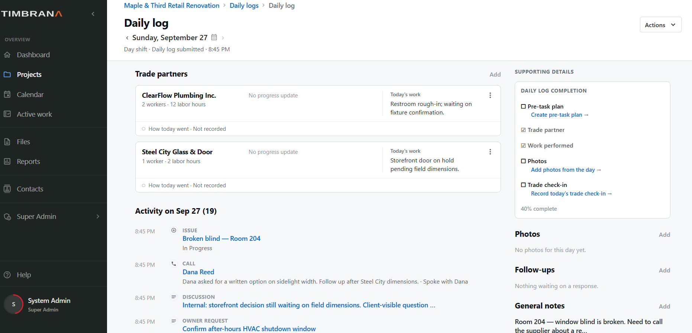

Construction Superintendent Software
Document the field without losing the next move.
Timbrana helps construction superintendents capture daily activity and carry the important parts forward: who was on site, what progressed, what changed, what needs follow-up, who is responsible and what the project is waiting on.
Built around the jobsite
The daily log should be the beginning, not a dead end.
Crews, progress, photos, deliveries, inspections and field conditions already create a useful record. Timbrana is designed so an entry that needs action can continue into an issue, RFI, event, owner question, change-order path or follow-up without forcing the superintendent to recreate the context.
Routine entries remain routine. The items that need attention keep moving.
Daily log
One place to review the day and what still needs attention.
Trade partners, work performed, project activity, supporting details, photos, follow-ups and notes stay together in the daily record.

Field to office
Give the PM context without writing the story twice.
A superintendent can surface the condition and practical impact. The project manager can take the formal next step when needed. Timbrana keeps those actions tied together so the field can see where the item stands without chasing a separate email thread.
Next
See the idea behind keeping current responsibility and unresolved work visible.
Continue to Project Awareness →